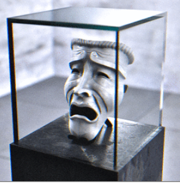

SCP-035
Описание: SCP-035 имеет вид белой фарфоровой маски комедианта, хотя периодически маска принимает облик трагика. Когда это происходит, все существующие изображения SCP-035, включая фотографии, видеозаписи и даже рисованные картины, самопроизвольно меняются, воспроизводя новый вид объекта.
Объект №: SCP-035
Класс объекта: Кетер
Особые условия содержания: SCP-035 следует содержать в герметичном стеклянном ящике с толщиной стенок не менее 10 сантиметров. Ящик, в свою очередь, должен постоянно храниться в камере со стальными, железными либо свинцовыми стенами. Дверь в камеру должна быть постоянно закрыта не менее, чем на три замка, открытие двери допускается только в случае необходимости доступа для персонала. Вход должен постоянно охраняться не менее чем двумя (2) вооружёнными сотрудниками охраны. Охрана должна постоянно находиться снаружи камеры и ни при каких обстоятельствах не входить внутрь. Также поблизости должен постоянно присутствовать квалифицированный психолог. Сотрудники, задействованные в исследованиях, ни при каких обстоятельствах не должны прикасаться к SCP-035. Каждые две (2) недели SCP-035 необходимо перемещать в новый ящик, при этом остатки предыдущего утилизируются посредством SCP-101, поскольку последний не проявляет восприимчивости к разлагающему воздействию SCP-035. Любому индивиду, вступившему в контакт с SCP-035 в период обладания носителем, должна быть оказана немедленная психологическая помощь.
